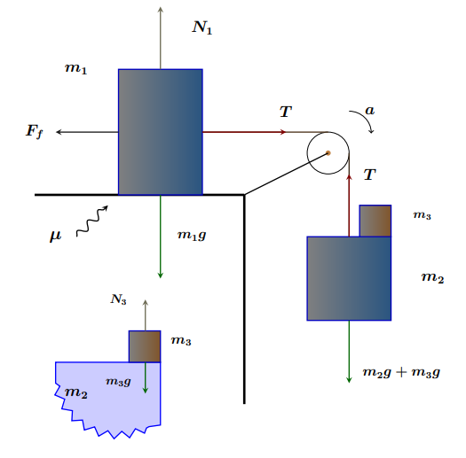

Professor, Col·legi Sant Josep Obrer
C/ Covadonga s/n. L'Hospitalet de Llobregat.
e-mail:
artur.sjo@gmail.com
|
 |
Programació provisional de les matèriesDegut a la situació excepcional que vivim, heu d'estar al cas més que mai de les possibles actualitzacions dels continguts d'aquest web. Seguiu les instruccions que aniré publicant per cada matèria a la pàgina corresponent. Les dates dels exàmens presencials (parcials i de recuperació) es concretaran en el moment que es puguin reprendre les activitats a l'escola. En principi seguirem amb els continguts previstos per a cada assignatura. De tota manera, en funció dels esdeveniments potser caldrà fer adaptacions. Arribat el cas ja us ho faré saber per aquest canal.
Docència
Treball de recerca
Altres
|